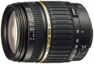

器材库 > APS画幅镜头 > AF 18-200/3.5-6.3 XR Di II LD Asp. IF Macro A14

详细规格
镜头类型
标准变焦镜头
发布日期
2004-09-28
厂家推荐价格
69,300.00 （日元）
焦距
18mm-200mm
等效35mm画幅焦距
28mm-300mm
最大光圈
f/3.5-f/6.3
最小光圈
f/22
视角（对角）
75.5-8
镜头结构
15片/13组
非球面镜片
3片
低/超低色散镜片
2片
光圈叶片
7片
最近对焦距离
45cm
最大放大倍率
0.27
驱动马达
AF马达
滤镜口径
62mm
镜头卡口
Canon EF, Minolta/Konica-Minolta/Sony AF, Nikon AF, Pentax AF
防抖
否
颜色
黑色
尺寸
73.8×83.7mm
重量
398g
附件
花瓣形遮光罩
备注
产品代码：A14
该产品暂无存档的网友点评
产品图 / 样片
外观图
评测 / 相关文章
该产品暂无存档的评测文章
相关文章
- ［行情］镜头人气榜2011年第三十九期 （存档）
- ［行情］镜头人气榜2011年第三十六期 （存档）
- ［行情］镜头人气榜2011年第三十一期 （存档）
- ［行情］镜头人气榜2011年第三十期 （存档）
- ［行情］镜头人气榜2011年第二十九期 （存档）
- ［行情］镜头人气榜2011年第二十八期 （存档）
- ［行情］镜头人气榜2011年第二十七期 （存档）
- ［行情］镜头人气榜2011年第二十六期 （原站已下线）
- ［行情］镜头人气榜2011年第二十五期 （存档）
- ［行情］镜头人气榜2011年第二十四期 （原站已下线）